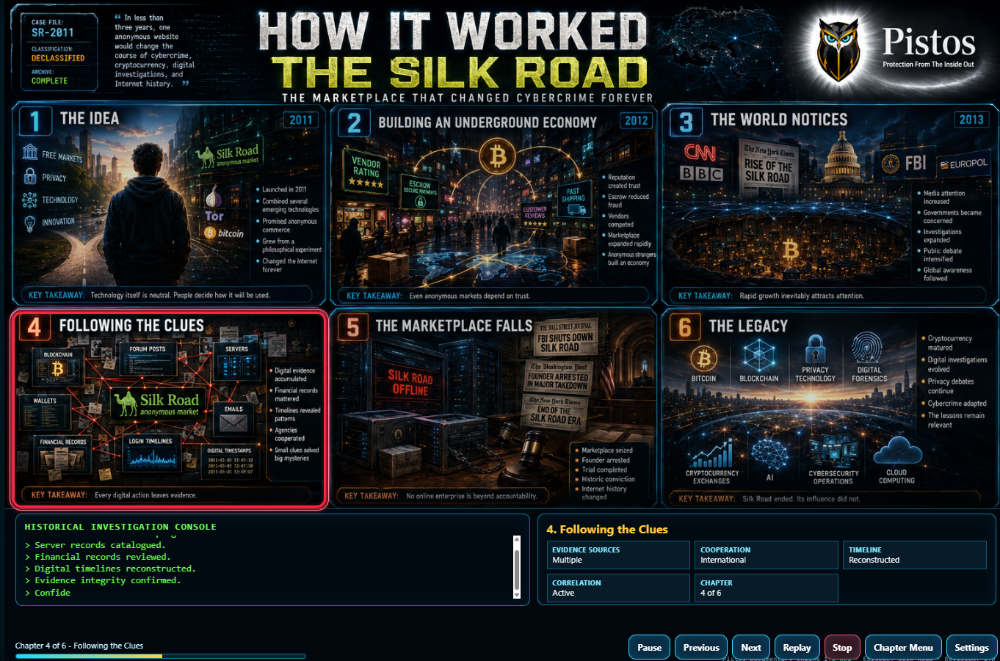

Mathisi · Security Awareness
Narrated modules at three levels, each closing with a short quiz, plus documentaries and debriefs of real security events. Inside PCS, every completion is recorded against the person who took it.
For every employee at onboarding: the everyday threats, the words for them, and the habits that stop most incidents before they start.
For staff with more access, such as account managers, finance and HR, tuned to the attacks aimed at their daily work.
For IT leads, administrators and the people who handle incidents: how attackers work at depth, and what to do in the first hour.
Narrated, chaptered stories of real cases, told the way a good documentary would tell them. Each chapter ends with one key takeaway your staff can remember.

In less than three years, one anonymous website changed the course of cybercrime. This documentary follows it from the first idea to the arrest, and shows how investigators pieced together blockchain records, server logs, emails and login times to find the person behind it.
The lesson: every digital action leaves evidence. About 6½ minutes.
Watch the documentaryShort narrated explainers on how attacks and investigations actually run, step by step.
Debriefs of real breaches: what happened, how it was noticed, what it cost, and what would have changed the outcome.
Clients take these modules inside PCS, where each completion is dated, recorded against the employee, and counted toward the training requirement in every framework that asks for it.
Request a briefing